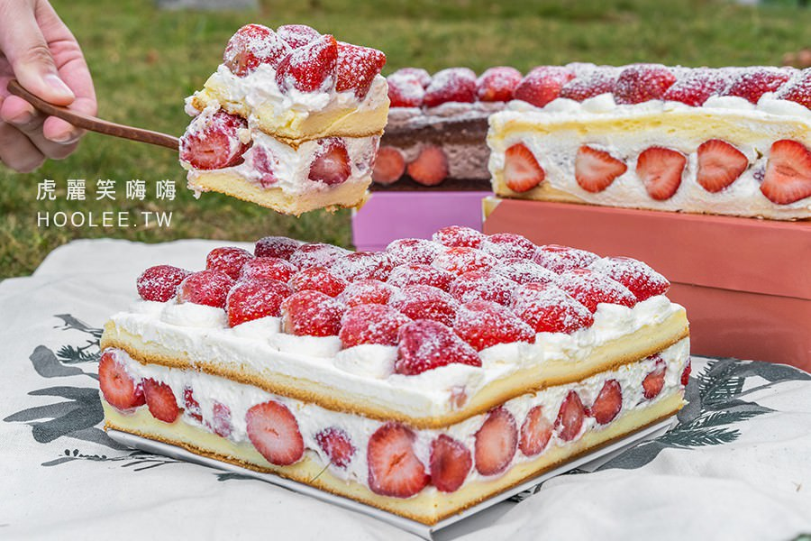

新巧屋烘焙食品行 已經開了12年左右，冬季從12月至隔年4月左右販售經典的爆多草莓蛋糕，
秋夏季節則會推出芒果蛋糕，一年四季都吃得到獨家特製的甜點，完全滿足甜食控的味蕾!很喜歡草莓季的蛋糕，
滿滿的整顆草莓加上海綿蛋糕愈吃愈涮嘴，另外還有苦甜的巧克力口味也很不錯哦～
冬季從12月至隔年4月左右販售經典的爆多草莓蛋糕，秋夏季節則會推出芒果蛋糕，
老闆說是嚴選大湖新鮮直送的草莓製作，口感飽滿多汁，滿滿的整顆草莓加上海綿蛋糕愈吃愈涮嘴
，另外還有苦甜的巧克力口味也很不錯哦～新巧屋都是選用當天新鮮直送的大湖草莓，每一顆都飽滿多汁。
滿滿的爆多草莓鋪在海綿蛋糕上，讓人忍不住想大咬一口(笑)。
海綿蛋糕夾層有自製鮮奶油和切片草莓，上面還有完整一顆一顆的草莓，真的是草莓控心頭好～ 撒上糖粉好像夢幻白雪～